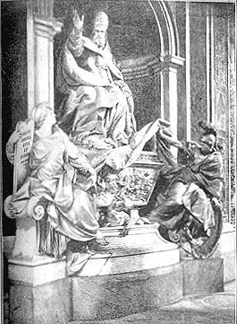
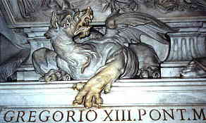
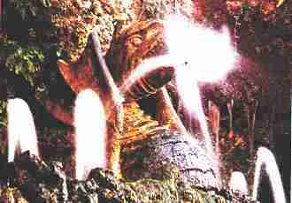
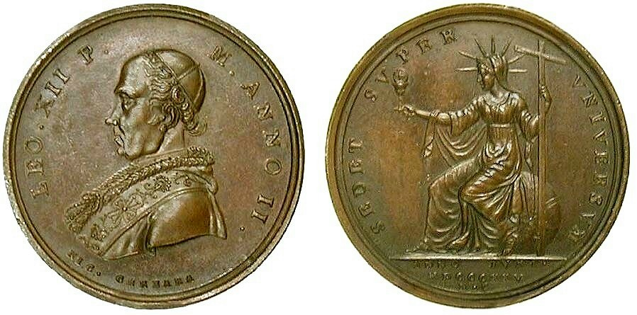
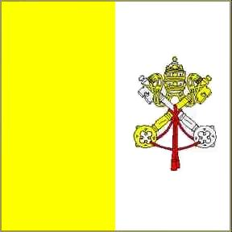

The Red Dragon and Rome.
 See
Empires Diagram
See
Empires Diagram
Rev 12:3 And there appeared another wonder in heaven; and behold
a great red dragon, having seven heads and ten horns, and seven crowns
upon his heads.
Rev 12:4 And his tail drew the third part of the stars of heaven, and
did cast them to the earth: and the dragon stood before the woman which
was ready to be delivered, for to devour her child as soon as it was
born.
Rev 12:9 And the great dragon was cast out, that old serpent, called
the Devil, and Satan, which deceiveth the whole world: he was cast out
into the earth, and his angels were cast out with him.
The above verses make clear, in even superficial reading, that the
Great Red Dragon is Satan. But there is another relationship that is
not as readily apparent. Verse 4 is referring to the birth of Jesus,
and Satan's attempt to kill the infant Jesus. Satan however, did not
attempt this act of murder on his own. He made his attempt through the
power of one man on earth. This man is identified:
Mat 2:13 And when they were departed, behold, the angel of the
Lord appeareth to Joseph in a dream, saying, Arise, and take the young
child and his mother, and flee into Egypt, and be thou there until I
bring thee word: for Herod will seek the young child to destroy him.
Herod the Great, the King of Judea and Palestine was the agent
Satan used in his attempt to kill the infant Jesus. It is significant
to note that Herod received his office from the Roman Empire. In 37
B.C. Herod the Great conquered Jerusalem with the aid of Roman armies
and made himself king.
Now notice again in Rev 12:3 that Satan is described as having
seven heads, ten horns and seven crowns. This is important because it
is a key to identify Satan and his agents elsewhere in Revelation:
Rev 13:1 And I stood upon the sand of the sea, and saw a beast
rise up out of the sea, having seven heads and ten horns, and upon his
horns ten crowns, and upon his heads the name of blasphemy.
Rev 13:2 And the beast which I saw was like unto a leopard, and his
feet were as the feet of a bear, and his mouth as the mouth of a lion:
and the dragon gave him his power, and his seat, and great authority.
Here another agent of Satan can be found. Although nearly
identical in description, it is not Satan, because verse 2 says this
beast power gets his power from the dragon - a clear reference to
Satan. As we observed in Matthew, Satan used the power of the ancient
Roman Empire to attempt the murder of Jesus. The dragon and Rome worked
with the same mind toward the same goal. So in Rev 13:2 we can possibly
substitute Rome for the word Dragon. Lets explore a little farther.
Note the animals that are mentioned. This is a reference back to
Daniel 7. John the Revelator was looking backwards in sequence at the
previous empires, to give us a time hack if you will, to identify this
Sea Beast in the stream of time. The Lion (Babylon) is referred to as
the head of Gold in Dan 2, the Bear (Medo-Persia) which is also the
chest of silver in Dan 2, and the Leopard (Greece) the thighs of brass
in Dan 2. Now there is also a fourth beast in Dan 7, to match the legs
of iron in Dan 2 -
Dan 7:7 After this I saw in the night visions, and behold a
fourth beast, dreadful and terrible, and strong exceedingly; and it had
great iron teeth: it devoured and brake in pieces, and stamped the
residue with the feet of it: and it was diverse from all the beasts
that were before it; and it had TEN HORNS.
This fourth diverse beast with ten horns correlates to ancient
pagan Rome. Ancient pagan Rome, when it disintegrated, was followed by
the divided kingdoms, which is to say a divided Europe (a condition
that exists today), represented by the feet and TEN TOES of clay and
iron in Dan 2.

The Winged Dragon and Rome
In 312 A.D. Emperor Constantine was about to enter into battle
with his rival emperor Maxentius. Greatly outnumbered by his opponents
army, Constantine on the day before the impending battle saw a vision
in the sky of a cross with the words "In Hoc Signo Crucis Vinces"
emblazoned about it, which means "In This Sign (the Cross) You Shall
Conquer". Constantine immediately adopted the cross as his emblem and
had it put on troops and banners. The following day Constantine
defeated Maxentius in the battle of Milvian Bridge. Constantine went on
to declare Christianity the state religion of Rome and was himself
later baptized a Christian.
A fresco in the Vatican, (The Sala di Constantino, Palazzi
Vaticani, Rome) painted by RAFFAELLO (1509-10 A.D.) depicts
Emperor Constantine's Vision of the Cross.
In the fresco, note what is in the upper right-hand corner (and
shown above). There you will see a winged serpent, or dragon. Raffaello
was depicting a pivotal moment in the conversion of Pagan Rome to
Christianity, the dragon he painted being symbolic of ancient Pagan
Rome.
|

|
Curiously, one of the Popes adopted the winged
serpent or dragon as his symbol on his heraldic shield. Here is the
heraldic coat of arms of Pope Gregory XIII, 1572-1585 A.D., who is most
known for initiating the calendar reform in use today, the Gregorian
calendar. This is something you can confirm in the book The Pope
Encyclopedia by Matthew Bunsen, published by Crown Trade
Paperbacks, 1995, ISBN 0-517-88256-6, page 163. |
|
|
GREGORIUS XIII
PONT(IFEX) OPT(IMUS) MAXIMUS |
ANNO RESTITUTO
MDLXXXII
(Year of Restitution 1582) |
The above papal medal of Pope Gregory XIII, designed by L Parm, is
dated 1582, marking the year of the Gregorian calendar reform. On the
reverse of the medal is a winged dragon / serpent encircling a ram's
head. As previously mentioned, the dragon is the biblical symbol of
Satan (Rev 12:9). The serpent that is chasing or devouring its tail is
called Ouroboros,
Uroboros, or Oureboros. The ram's head is also a
satanic symbol, and is frequently associated with the Egyptian deities,
such as the god Amon (Amoun, Ammun, Ammon), the king of all gods, who
was also regarded as the sun god, and Khnum, who created mankind on his
potter's wheel from the mud of the Nile.
The intended symbolic meaning, however, is undoubtedly that of
Aries the Ram, the first sign of the Zodiac, which symbolizes the
Vernal / Spring Equinox, and Draco / Drako (or Ouroboros) the
serpent depicting a cyclical returning. Pope Gregory XIII had modified
the calendar specifically so that the Vernal Equinox would remain
relatively constant, on or about March 21st, which is the beginning of
the Zodiacal year, when the Sun crosses the Equator and enters the
astrological sign of Aries. This had the desired result of returning
Easter to the time specified by the Nicene Council (325 A.D.).
|  |

At left is the tomb
of Pope Gregory XIII which celebrates the Gregorian Calendar
reform, and above is a close up of the guardian dragon near the base of
the monument. At the top of the monument (but not visible in the photo
at left) is a large heraldic shield for Gregory XIII, which contains
the winged dragon, a symbol of Satan.
|
|  |
A second pope, Paolo V (1605-1621) also used a winged dragon
on his heraldic shield along with an eagle. In the Vatican Gardens
there is a fountain called the Fountain of Towers, bearing the
inscription and papal shield of Paolo V, in which the central figure of
the fountain is a winged dragon centered in water spouts. Flanking
either side of the fountain are fortress like towers topped by
sculptures of winged dragons. |
| Photo by Mario Carrieri |
| |
|
| Because it somewhat resembles an altar, this
fountain has also been called the Fountain of the Sacrament, or in
Italian, Fontana del Santissimo Sacramento. The spray of water from the
dragon's mouth is said to imitate the rays of a sunburst monstrance. |
|
| |
Fountain of Towers, Vatican
Gardens
|
The Transfer of Power to the Bishop of Rome.
As we established with Rev 12:4, the dragon's agent
in trying to kill Christ was ancient Rome (through Herod). With this
relationship of Dragon = Rome we can see that the beast from the sea of
Revelation 13 should get his power and seat and great authority from
the Ancient Roman Empire, through Satan, just like Herod did. This
prompts the question, did ancient Rome formally bestow its power and
authority on any existing power?
A check of history will reveal the successor to the
Roman emperors. With the move of the Roman capitol to Constantinople,
there was a political power vacuum that was quickly and willingly
filled by the Bishop of Rome-
[p. 269] Whatever Roman elements the barbarians and
Arians left … [came] under the protection of the Bishop of Rome, who
was the chief person there after the Emperor’s disappearance… [p. 270]
The Roman Church in this way privily pushed itself into the place of
the Roman World-Empire, of which it is the actual continuation; the
empire has not perished, but has only undergone a transformation … That
is no mere “clever remark,” but the recognition of the true state of
the matter historically, and the most appropriate and fruitful way of
describing the character of this Church. It still governs the nations …
It is a political creation, and as imposing as a World-Empire, because
the continuation of the Roman Empire. The Pope, who calls himself
“King” and “Pontifex Maximus,” is Caesar’s successor.
Source: Adolf Harnack, What Is Christianity?
trans. by Thomas Bailey Saunders (2d ed., rev.; New York: Putnam,
1901), pp. 269, 270. [Ernest Benn Ltd., London, has recently published
a new edition of this book.]
The archetype from which the pope descends is that of the imperial
Caesar, ... while for the most part Italy wasn't even a unified state -
unlike France, Spain, England, Russia - that unique supreme Christian
authority, purely Italian, nevertheless continued to represent the
universality descended from the emperors. It is not paradoxical to say
that in Italy the monarchy has continued to exist despite the expulsion
of the royal House of Savoy, because the monarchical authority of the
pontiff has a charisma and a national power of attraction that no
president of the republic has ever been able to claim.
Source: Why the next pope needs to be
Italian, by Roberto Pazzi, The International Herald Tribune
Online, Monday, January 12, 2004, translated by Ann McGarrell
from Italian.
One of the most famous forged documents ever was the
Donation of Constantine, which it was claimed, proved that Emperor
Constantine had given authority and property to the Pontiff of Rome.
For many centuries the Donation of Constantine was used by the Catholic
church to validate it's claim to authority. OK, you say, but that was a
forgery - it was not an authentic transfer of power to the Papacy.
True. There was such a document however, the authenticity of which is
not challenged even to this day. In 533 A.D. Roman Emperor Justinian
declared in a letter to
the Archbishop of Rome "We have exerted Ourselves to unite all the
priests of the East and subject them to the See of Your Holiness",
and that "because you are the
head of all the Holy Churches, for We shall exert Ourselves in every
way (as has already been stated), to increase the honor and authority
of your See." (See
Justinian Code.) This was the formal
transfer of power from the Emperor of Pagan Rome to the Papacy. It
should be noted however, the implementation of this decree did not
actually occur until 538 A.D. when a siege of Rome by the Ostrogoths
was broken.
Dan 7:7 After this I saw in the night visions, and
behold a fourth beast, dreadful and terrible, and strong exceedingly;
and it had great iron teeth: it devoured and brake in pieces, and
stamped the residue with the feet of it: and it was diverse from all
the beasts that were before it; and it had ten horns.
Rome is described in Dan 7:7 as diverse, or different
from previous powers. This is because, as we have seen, the ancient
Pagan Roman empire GAVE political power and religious authority to it's
successor, the Roman Catholic Church.
Note that each of the beasts in Daniel can be
described as UNIVERSAL powers that dominated the world at the time.
Ancient Rome also was a universal power, yet in time, the Roman empire
faded. It's clear successor is the UNIVERSAL (Catholic) CHURCH - again
another universal power. Rome was the diverse fourth power because it
evolved from a Pagan Political power, into a Christian religious AND
political power, though still dominated by Pagan beliefs.
The "Little Horn" Power
Dan 7:8 I considered the (10) horns, and, behold,
there came up among them another little horn, ...
Pope Pius IX gave
this remarkable testimony:
"It is, therefore, by a particular decree of Divine
Providence that, at the fall of the Roman Empire and its partition into
separate kingdoms, the Roman Pontiff, whom Christ made the head and
center of his entire Church, acquired civil power." − Pius IX, Apostolic Letter
Cum
Catholica Ecclesia, March 26, 1860.
Source: Papal
Teachings: The Church, selected and arranged by the Benedictine
Monks of Solesmes, translated by Mother E. O'Gorman, R.S.C.J.,
Manhattanville College of the Sacred Heart, St. Paul Editions, Boston,
© 1980, 1962 by Daughters of St. Paul, Library of Congress catalog card
number 62-12454, par. #225, page
160.
Divine Providence
indeed! Daniel had prophesied it! The phrase "little horn"
indicates a "little kingdom". This is one of the distinguishing
characteristics of this entity, its small size geographically. The
Vatican, the headquarters for the Catholic Church located in Rome, is
today the smallest independent country in the world, covering
only about 108 acres in size. The papal monarchy came up among the
divided kingdoms (the 10 horns), after the fall of the Rome Empire, and
has had influence greatly disproportionate to its geographical size.
Dan 7:8 ... before whom there were three of the
first horns plucked up by the roots: ...
Who were these three kingdoms that were uprooted? The
Heruli (some prefer the Visigoths), the Vandals, and finally the
Ostrogoths. Each of them were Arian (denying the divinity of Jesus
Christ), considered heretics by the Roman Catholic Church.
Dan 7:8 ... and, behold, in this horn were eyes
like the eyes of man, and a mouth speaking great things.
Dan 7:25 And he shall speak great words against
the most High,
and shall wear out the saints of the most High,
and think to change times and laws (of the most High):
and they shall be given into his hand until a time and times and the
dividing of time.
Note what I added in parenthesis above. The Little
Horn (The Papacy) thinks to be able to change times and laws, and in
context it is speaking about the times and laws of God. The little horn
power thinks to change these two specific things. Note the following
description of the true church:
Rev 12:17 And the dragon was wroth with the woman,
and went to make war with the remnant of her seed, which [1] keep the commandments of
God, and [2] have
the testimony of Jesus Christ.
Rev 19:10 And I fell at his feet to worship him.
And he said unto me, See thou do it not: I am thy fellowservant, and of
thy brethren that have the testimony of Jesus: worship God: for the testimony of Jesus is
the spirit of prophecy.
1. Tampering with God's Unchangeable Law:
So has the Papacy, the Roman Catholic Church, claimed
that the Law of of God, the Ten Commandments can be changed? Indeed
they do. They think they have done it by changing the Sabbath day of
rest to Sunday!
2. Changing the Times of God:
Acts 1:6 When they therefore were come together,
they asked of him, saying, Lord, wilt thou at this time restore again
the kingdom to Israel?
Acts 1:7 And he said unto them, It is not for
you to know the times or the seasons, which the Father hath put
in his own power.
The "times" of the most high are appointed times in
the future, which is to say events which are prophesied to occur. One
of these times is specifically mentioned in Daniel 7:25 - "and they
shall be given into his hand until a time and times and the dividing of
time." That refers to 3-1/2 times, or 1260 days which in prophetic time
means 1260 years. See:
This "little horn" in Daniel is the Roman Catholic
church (the Papacy), that changed the day of rest, tampered with the
Ten Commandments and persecuted the saints for 1260 years.
Wearing Out the Saints
GREGORIUS XIII - PONT. MAX. AN. I
UGONOTTORUM STRAGES (HUGUENOTS SLAUGHTERED) - 1572
Pope Gregory XIII, with the dragon of Satan as his
heraldic symbol, was also the pope who upon hearing of the wholesale
slaughter of Protestant French Huguenots, known as St. Bartholomew's
massacre, had a medal struck to celebrate the bloody event. The reverse
side of the medal, shown above, depicts an angel with a cross and sword
murdering the Huguenot heretics.
To his credit, while in Paris to celebrate the 12th
World Youth Day on Saturday, August 23rd, 1997, the eve of the
anniversary of the massacre, Pope John Paul II made a brief apology for
the acts of French Catholics 425 years before, by admitting that
"Christians did things which the Gospel condemns."
Note the fate of this little horn beast in Daniel:
Dan 7:11 I beheld then because of the voice of the
great words which the horn spake: I beheld even till the beast was
slain, and his body destroyed, and given to the burning flame.
This is also a reference to:
Rev 19:20 And the beast was taken, and with him the
false prophet that wrought miracles before him, with which he deceived
them that had received the mark of the beast, and them that worshipped
his image. These both were cast alive into a lake of fire burning with
brimstone.
Continuing to follow the trail of seven heads and ten
horns in the Bible leads us also to a beast in Rev 17, the same beast
destroyed in Rev 19:20 as we have just seen.
Rev 17:3 So he carried me
away in the spirit into the wilderness: and I saw a woman sit upon a
scarlet coloured beast, full of names of blasphemy, having seven heads
and ten horns.
Rev 17:4 And the woman was arrayed in purple and scarlet colour, and
decked with gold and precious stones and pearls, having a golden cup in
her hand full of abominations and filthiness of her fornication:
Rev 17:5 And upon her forehead was a name written, MYSTERY, BABYLON THE
GREAT, THE MOTHER OF HARLOTS AND ABOMINATIONS OF THE EARTH.
Rev 17:6 And I saw the woman drunken with the blood of the saints, and
with the blood of the martyrs of Jesus: and when I saw her, I wondered
with great admiration.
Note the contrast of this woman with the woman found
in Rev 12. In scripture a woman commonly represents a church (Jer 6:2,
Isa 54:5-6, Hos 2:19-20, John 3:29, 2 Cor 11:2, Rev 19:7-8). The
symbolic woman of Rev 12 represents the righteous church of believers
that brought forth Jesus and is described in admirable terms. Compare
that with the symbolic woman described here in Rev 17, the apostate
church. Note that this church is described as the Mother of Harlots.
There is only ONE Christian church that is self-described as the Mother
church - the Roman Catholic Church - and her Protestant daughters are
called harlots.
The Mother Church
St. John Lateran Cathedral

At the base of the columns on either side of the central entrance
door of St. John Lateran, the Cathedral of the Bishop of Rome, the
pope, the inscription reads:
SACROS(ANCTA) LATERAN(ENSIS) ECCLES(IA)
OMNIUM URBIS ET ORBIS
ECCLESIARUM MATER
ET CAPUT.
It translates to "Sacred Lateran Church, Universally
for the City and the World, Supreme Mother of Churches", or
“Holy Lateran Church, Mother and Head of all
Churches in the City and the World”, a fulfillment of
Revelation 17:5.
Rev 17:5 And upon her forehead was a name written,
MYSTERY, BABYLON THE GREAT, THE MOTHER OF HARLOTS AND ABOMINATIONS OF
THE EARTH.
Rev 17:18 And the woman which thou sawest is that
great city, which reigneth over the kings of the earth.
Here we are told that the woman of Rev 17, the
apostate church, is the same entity as the great city of Babylon that
reigns over the kings of the earth, found in Rev 18. There is only one
church that history shows to have made the claim of authority over the
kings of the earth. That church is the Roman Catholic Church, and
Babylon is the code word for the city of Rome-
1 Pet 5:13 The church that is at Babylon, elected
together with you, saluteth you; and so doth Marcus my son.
This verse is widely recognized as meaning Rome, not
Babylon. Roman Catholics have even acknowledged this association:
"Babylon," from which Peter addresses his first
Epistle, is understood by learned annotators, Protestant and Catholic,
to refer to Rome - the word Babylon being symbolic of the corruption
then prevailing in the city of the Caesars.
Source: Faith of Our Fathers, by James
Cardinal Gibbons, 111th printing, Published by TAN Books and Publishers, INC.,
P.O. Box 424, Rockford, Illinois 61105, Copyright 1980, page
87.
Here is wisdom
There are two verses in Revelation that have a
striking relationship, both calling for wisdom:
Rev 13:18 Here is wisdom. Let him that hath
understanding count the number of the beast: for it is the number of a
man; and his number is Six hundred threescore and six.
Rev 17:9 And here is the mind which hath wisdom.
The seven heads are seven mountains, on which the woman sitteth.
This is a clear linkage of the number 666 with the
woman that sits on seven mountains. A woman is common symbology in the
Bible for a church. Look in any encyclopedia and you will discover that
Rome is the city of seven hills or mountains. It is very interesting to
note that Vatican City and St. Peter's Basilica of the Catholic Church
were built upon what was called in Latin vaticanus mons or vaticanus
collis, which when translated means "hill of prophecy":
vatis / vatic = prophecy, anus = of
mons / collis = hill or mountain.
Rev 17:18 And the woman which thou sawest is that
great city, which reigneth over the kings of the earth.

Pope Pius the 12th - 1958 |

Pope John the 23rd - 1959 |
CITTÁ DEL VATICANO - CITY OF PROPHECY
|

Pope Paul the 6th - 1963 |
Above are three 100 Lire coins minted by Vatican
City, or the "City of Prophecy". (Click on a coin for a closer look.)
Vatican City is unwittingly declaring itself to be that woman of
Revelation 17, the church that claims to rule over the kings of the
earth, because the Catholic Church is portrayed on the coins as a woman
(FIDES = FAITH) with a cup in her hand (a golden cup of the Mass with
sunburst Eucharist host) as described in Rev 17:4:
Rev 17:4 And the woman was arrayed in purple and
scarlet colour, and decked with gold and precious stones and pearls,
having a golden cup in her hand full of abominations and filthiness of
her fornication:
Rev 17:5 And upon her forehead was a name written, MYSTERY, BABYLON THE
GREAT, THE MOTHER OF HARLOTS AND ABOMINATIONS OF THE EARTH.
Rev 17:6 And I saw the woman drunken with the blood of the saints, and
with the blood of the martyrs of Jesus: and when I saw her, I wondered
with great admiration.
The cup the woman holds represents false doctrine;
fornication or adulteration of the truth.

| LEO XII P.(ontifex)
M.(aximus) ANNO II |
SEDET SVPER VNIVERSVM |
Above is a bronze papal medal (Mazio #585) of Pope
Leo XII, minted to commemorate the second year of his reign, the
jubilee year of 1825. Again the Roman Catholic Church is portrayed as a
woman seated on the globe with a cup in her hand. The inscription on
the reverse reads SEDET SUPER UNIVERSUM, declaring that her seat of
authority is universal, i.e., over the entire globe.
Below are illustrations of two more coins (gold - 2 Zecchini)
minted during the reign of Leo XII, which depict FIDES (the Catholic
Faith) as a woman on the reverse side, also holding the golden cup of
the Mass.
|

|
2 Zecchini, 22mm diam., 6.9g, .998 gold, Fr.
253, KM 1089
Pope Leo XII - 1825 (Anno III)
Populis Expiatis |
|
Pope Leo XII - 1828 (Anno V)
Supra Firmam Petram |
|
|
|
A gold Scudo minted during the reign of Pope
Clement XI in 1718
(Anno XVIII) with a cup holding Fides on the reverse. (Berman 2363, KM
771)
|

Papal medal of Pius VIII from 1829 with a cup
holding Fides between cherubs with tiara and keys.
The woman of Rev 17, holding a golden cup, is
described in verse 6 as being drunk with the blood of martyrs of Jesus.
There is only one Christian church responsible for the death of
thousands and thousands of fellow Christians during prolonged periods
of persecution - the Roman Catholic Church. This happened in what is
called the Dark Ages of European history. Christians were burned at the
stake for possessing a Bible, speaking verses in the common tongue
rather than Latin, or contradicting the policies of the Papacy.
Uncounted thousands were slaughtered during this persecution. Note the
following:
(Rev 13:15) ... And cause that as many as would
not worship the image of the beast should be put to death.
Christ does not do so, neither his Prophets or
Apostles teach so, neither have the kings that are Christians received
any such instructions to kill men, or to make them think that the
worship of Christ is to be stained with blood; for the true God doth
not desire any forced, but voluntary service. Wherefore by his mark
especially will he make it evident to all that have any understanding,
that indeed he is the Antichrist; that indeed he is not Christ, but,
according to his name, opposite and contrary to Christ. He is Christ
that sheds his own blood, he is Antichrist that sheds the blood of
others. -- Rupertus, Abbot of Tuits, in his12th century commentary on
Revelation, Apoc. lib. 3. cap. 13.
Source: Pierre Allix, Ecclesiastical History of
Ancient Churches of the Piedmont, published in Oxford at the
Clarendon Press in 1821, reprinted in USA in 1989 by Church History
Research & Archives, P.O. Box 38, Dayton Ohio, 45449, p. 230
|  |
The woman of Revelation 17 also rides a beast, and in
Bible prophecy a beast is symbolic of a political power or country. So
the woman / church of Revelation 17 rides on the political power of the
state. The Vatican is not only a city, but since the Lateran Treaty of
1929 signed with Mussolini it is again also a country, with diplomatic
relations with nearly every other nation on earth, and the Pope is the
head of state. On the left is the Vatican state flag.
|
She also bears the name of Mystery. Mystery is the
term used by the Roman Catholic Church to refer to the Mass,
specifically the transubstantiation of the bread and wine into the body
and blood of Christ. It is a key part of Catholic dogma. These are the
words of the priest in Latin or English (emphasis is mine):
HIC EST ENIM CALIX SANGUINIS MEI, NOVI ET AETERNI
TESTAMENTI: MYSTERIUM FIDEI, QUI PRO VOBIS ET PRO MULTIS
EFFUNDETUR IN REMISSIONEM PECCATORUM.
FOR THIS IS THE CHALICE OF MY BLOOD, OF THE NEW AND
ETERNAL TESTAMENT, THE MYSTERY OF FAITH, WHICH FOR YOU AND FOR
MANY SHALL BE SHED UNTO THE REMISSION OF SINS.
She is described in Revelation 17:3 as full of names
of blasphemy. How does the Bible define blasphemy? Here is one biblical
definition:
Mark 2:5 When Jesus saw their faith, he said unto
the sick of the palsy, Son, thy sins be forgiven thee.
Mark 2:6 But there were certain of the scribes sitting there, and
reasoning in their hearts,
Mark 2:7 Why doth this man thus speak blasphemies? who can forgive sins
but God only?
Only God has the power to forgive you your sins. Yet
the Roman Catholic Church claims this power for it's priests. In
addition, for hundreds of years the Roman Catholic Church sold what it
called indulgences. By contributing to the church, your sins could be
forgiven. Indeed the Vatican itself was built by funds raised in this
manner. Indulgences continue today in the form of penance. They claim
there are works you can do that bear either partial remittance of sins
or plenary (full) remittance of sins. So, with the blessing of the
church, you can forgive your own sins by your own actions. As Mark
2:3-5 shows, these are examples of the blasphemy described in Rev 17:3.
Conclusions Evident with Additional Facts:
- The Roman Catholic Church (Papal Rome) is the beast from the
sea of Rev 13, the woman of Rev 17 and the Babylon of Rev 18.
- The Papacy is the Antichrist of Rev 13, whose number is 666,
and he is the little horn of Daniel 7 and 8. His mark of authority is
Sunday worship (the mark of the beast).
- The Protestant churches derived from the Catholic Church are
considered harlots. This is because they still adhere to much of the
Catholic inspired false doctrine (like the dead go immediately to
heaven or hell) and bear it's mark of authority (Sunday worship). It
can be shown that U.S. based Protestantism is in fact the False Prophet
of Revelation, as well as the image to the beast, the beast being
Catholicism.
- The power behind the Papacy of the Roman Catholic Church is
none other than Satan. He first attempted to use Rome to kill the
infant Jesus. He also used the Roman empire to try to exterminate the
early Christians. This just forced Christianity underground, even in a
literal sense, yet it still flourished. So Satan changed tactics and
infiltrated the church through Pagan practices and began to persecute
those who clung to true doctrine, by using the church itself as the
exterminator. This era of papal power began in 538 A.D. and ended in
1798 a period of 1260 years. This is the period referred to as 1260
days, 42 months, and 3 1/2 times in the Bible.
In all this, is there any good news? Yes, most
definitely.
Rev 18:4 And I heard another voice from heaven,
saying, Come out of her, my people, that ye be not partakers of her
sins, and that ye receive not of her plagues.
Rev 18:5 For her sins have reached unto heaven, and God hath remembered
her iniquities.
It is clear that God has people that are now in
Babylon. Everyone still has an opportunity to escape the wrath of God
as manifested in the final 7 plagues. But in order to do so, you have
to know who and what spiritual Babylon is. You must know the Antichrist
and what the mark of the beast is and what the seal of God is. You have
to be able to discriminate between true and false doctrine. You do all
of this with the Bible. While Roman Catholicism is specifically evident
as Babylon in scripture, it is actual broader than that. Spiritual
Babylon is really a kind of corrupted religion, not just one
denomination. Are you in Babylon? There is still time to get out of
spiritual Babylon if you are in it - but it may not last much longer.
Can you afford to wait? Would you bet your life (eternal) on it?
Sunday is NOT the biblical
Sabbath day
Did the Apostles Keep
Sunday To Honor The Resurrection?
Offering Strange Fire Before
The Lord
The Seal of God in the Old and New Covenants
The
Abomination of Desolation
The Scriptures on
Judgment
Time, Times, and Half a Time?
The Catholic Origins of Futurism and Preterism
What Does The Word VATICAN Mean?
The Battle of
Armageddon.


{kind=link}
{kind=link}
{kind=link}